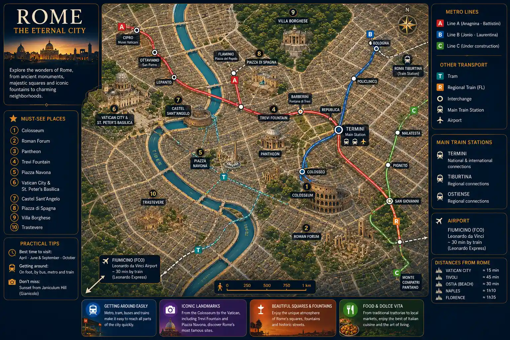

Rome Crosses the Centuries Without Losing Its Magic
Explore Rome through ancient monuments, Italian cafés, historic streets, rooftops and authentic Italian cuisine.
Colosseum • Vatican • Trastevere • Pasta • Italian Football
The Colosseum, the Roman Forum and the Vatican make Rome timeless.
Pasta, pizza, trattorias and iconic cafés throughout the city.
Trastevere, Piazza Navona and the most beautiful views of Rome.
AS Roma, Lazio and the unique atmosphere of Roman football.
Rome is one of Europe's most fascinating cities. As the capital of Italy, it combines ancient monuments, religious heritage, world-famous cuisine and a Mediterranean lifestyle.
From the Colosseum to the Vatican, and from Trastevere to the historic squares of the city center, every neighborhood tells part of Rome's story and offers its own unique atmosphere.
Between cultural landmarks, Italian specialties, panoramic sunsets and passionate football culture, Rome appeals equally to history lovers and travelers seeking authentic local experiences.
Explore more cities in our travel destinations guide.

Beyond the Colosseum and the Vatican, some experiences reveal a more authentic, local and often more memorable side of Rome than the classic tourist attractions.

Janiculum Hill offers one of the most beautiful panoramic views of Rome. At sunset, the city's domes, bell towers and rooftops glow with golden colors.

Discover Rome from the back of a classic Italian Vespa and enjoy iconic views of the Colosseum, Janiculum Hill and Trastevere while experiencing one of the most legendary activities in the Italian capital.
Book the Experience →
Leave the historic center behind and discover a different side of Rome. Between the famous Appian Way, underground catacombs and impressive ancient aqueducts, this excursion immerses visitors in the heart of Roman history.
Discover the Experience →
Discovering carbonara, cacio e pepe, supplì and artisanal gelato is one of the best ways to explore Rome through its culinary traditions and local flavors.

As night falls, Trastevere becomes one of Rome's liveliest districts, filled with restaurants, terraces, street performers and vibrant alleyways.

The aperitivo is a true institution in Rome and throughout Italy. Between 6 PM and 9 PM, locals gather over a Spritz, Negroni or glass of wine served with antipasti before dinner.
📍 Recommended districts: Trastevere, Monti and Testaccio.
🕒 Best time: between 6 PM and 9 PM.

For an unforgettable dinner, a special anniversary or even a marriage proposal, several rooftop restaurants offer an exceptional setting as the sun sets over Rome.
Facing St. Peter's Basilica, illuminated landmarks and the rooftops of the Eternal City, these venues rank among Rome's most romantic experiences.
Discover the Restaurants →One of Rome's most authentic districts. Restaurants, terraces, cobbled streets and a local atmosphere make it an excellent choice for discovering the city beyond the usual tourist routes.
Perfect for a first visit. Close to the Pantheon, Trevi Fountain and Piazza Navona, this area provides easy access to Rome's main attractions.
Located near the Colosseum, Monti is a trendy neighborhood known for its cafés, independent boutiques and relaxed atmosphere.
Just steps from the Vatican, Prati offers an elegant, peaceful and well-connected environment, ideal for travelers seeking a quieter stay.
One of Rome's most peaceful areas. Its gardens, panoramic viewpoints and residential atmosphere appeal to visitors looking for tranquility.
Compare accommodations in Rome's best neighborhoods.
A few practical tips can help you prepare your trip to Rome, whether you're planning your visits, budget or the best time to travel.
Italian is the official language. In tourist areas, many professionals also speak English.
The euro (€) is used throughout Rome. Credit cards are accepted in most hotels, restaurants and shops.
Italy mainly uses Type C, F and L electrical outlets with a voltage of 230V. European travelers generally do not need an adapter.
Three to four days are enough to discover Rome's main monuments. A full week allows more time to explore its neighborhoods and surroundings.
Spring and autumn are generally the most pleasant seasons to visit Rome thanks to mild temperatures and fewer crowds.
For a comfortable stay, plan on spending between €120 and €250 per day depending on accommodation, activities and dining choices.
Between traditional trattorias, Roman-style pizza, historic cafés and sunset aperitivos, food is an essential part of the Roman experience.

Roman trattorias are the perfect place to discover local specialties in a warm and authentic atmosphere at the heart of Italian culture.

Thin, crispy and light, Roman pizza has a unique identity that sets it apart from the famous Neapolitan pizza.
View Restaurants →
Trastevere is home to some of Rome's best restaurants in a lively atmosphere that continues well into the evening.

From espresso and Italian pastries to centuries-old establishments, historic cafés are an essential part of Roman lifestyle.

Enjoying a drink while overlooking Rome's domes, monuments and rooftops is one of the most appreciated pleasures of the Italian capital.
Discover Amazing Restaurants on OpenTable →From the remains of the Roman Empire to Renaissance masterpieces, Rome is home to some of the world's most famous and visited landmarks.

The symbol of Rome, the Colosseum is one of the most impressive ancient amphitheaters ever built.
Book a Tour →
The Roman Forum was the political, religious and commercial heart of ancient Rome, immersing visitors in the city's rich history.
Explore the Forum →
St. Peter's Basilica and the Vatican Museums are among the most prestigious cultural sites in Europe.
View Tickets →
Michelangelo's frescoes make the Sistine Chapel one of the most famous artistic masterpieces in the world.
Discover →
Italy's most famous fountain attracts thousands of visitors every day who continue the tradition of tossing a coin into its waters.

Remarkably preserved, the Pantheon impresses visitors with its massive dome and exceptional ancient architecture.

This iconic square is famous for its Baroque fountains, street artists and unmistakably Roman atmosphere.

Rome's most famous park is the perfect place to relax among gardens, museums and panoramic views of the city.
From the passionate atmosphere of Stadio Olimpico to international tournaments and concerts by world-famous artists, Rome offers unique sporting and cultural experiences throughout the year.

Watching AS Roma or Lazio play at Stadio Olimpico is one of the best ways to experience the passion of Italian football. The Derby della Capitale is considered one of Europe's greatest football rivalries.
View Matches →
Rome's largest stadium hosts AS Roma and Lazio matches as well as numerous international sporting events throughout the year.
Stadium Tour Tickets →
Every spring, Rome hosts the Internazionali d'Italia at Foro Italico. This prestigious clay-court tennis tournament brings together the world's best players ahead of Roland-Garros.
View Tickets →
Concerts, operas and major live performances bring international artists to iconic venues such as Stadio Olimpico, Auditorium Parco della Musica and the Baths of Caracalla.
View Concerts →Rome combines ancient history, Italian gastronomy, culture, football and a unique Mediterranean atmosphere.
Between the Colosseum, historic streets, traditional trattorias and Roman sunsets, Rome offers a truly timeless atmosphere.
Planning another European city trip? Explore our travel destinations guide to discover London, Paris, Amsterdam, Barcelona and more.
The metro, buses and scooters make it easy to explore Rome.
Trastevere and the historic districts offer some of the finest Italian specialties.
The Colosseum, Vatican, Trevi Fountain and Piazza Navona are essential stops.